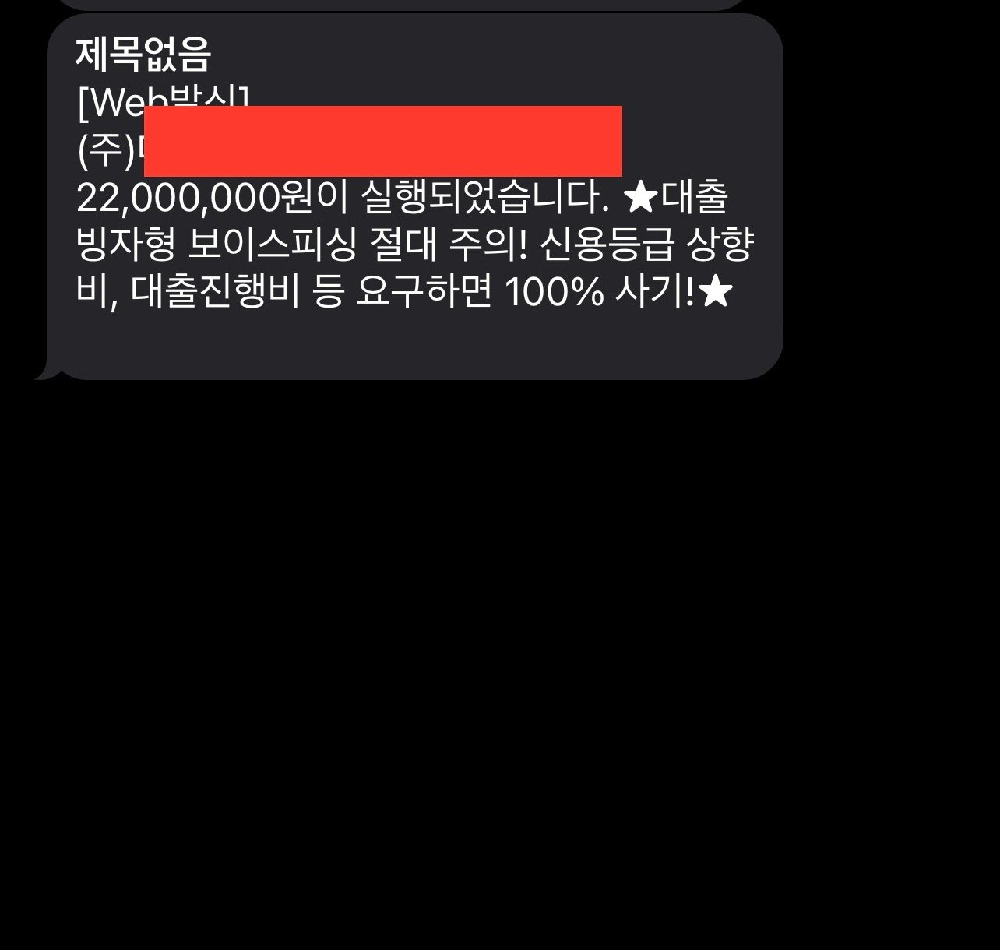

[개인회생자대출] 이제 마지막 대출 입니다 (취규열 이사님 감사합니다)
오늘 아침에 대출 요청하였고 한 3시간만에 입금 완료네요
3달전에 금리 24 % 2000만 이용하던거 20 % 바꾸고
이번에 저축은행 18.7 % 2200만원 승인이 나서 20 % 금리 바꾸고
개인회생 60회중 5회 남았는데 5회 납입까지 해주시고
여유자금은 필요가 없어서 추가 요청은 안했습니다

이제는 값기만 하면 되네요.
일단 5년 약정 했지만 1년안에 값을수 있을거 같네요.
이제와서 느낀거지만 저는 한달에 나가던 대출이 5개월전만 해도 약 200만원 (원금보다 거의 이자만) 나갔습니다
무려 3년 정도 그렇게 살아왔는데 저한테는 운좋게 형이 알게되서 대출 다 값아주고
배우자 대출도 다 값아주고 집까지 사주고 저한테는 로또 맞은거죠
하지만 차량 대출은 차마 말할수 없어서 이렇게 알아보고 해결만 하면 되네요
진짜 월급 받아서 통장에 돈이 남아 있다는 느낌이 정말 좋네요
저도 개인회생으로 재회생 포함 한 10년을 했습니다. 어떻게 그동안 버텨온게 대단하죠
진짜 힘들고 돈 나올곳이 없을때 창피한거 다 버리고 퇴직금 중도 인출해서 겨우 버티고 살았네요
힘들어도 다 해결되는 날들이 올거라 생각 합니다
덕분에 오늘 잘 해결되서 이제는 가끔 눈팅 하러 올게요~
감사합니다~